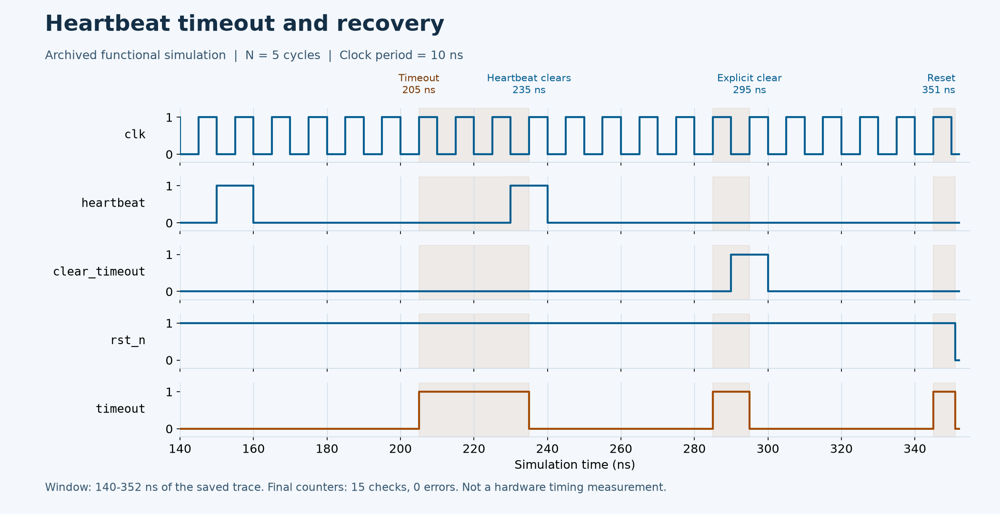

Public implementation
RTL, testbench and a Questa PowerShell entry point are available. The runner requires TEST PASSED and normal process termination.
Space BMC Core
A parameterized Verilog heartbeat monitor with a self-checking testbench for timeout boundaries, latching, clearing and interval restart.
01 / EVIDENCE

Actual signal transitions from a saved Questa WLF, converted to VCD and plotted over 140–352 ns. This testbench uses N = 5 and a 10 ns clock: timeout asserts at 205 ns, heartbeat clears it at 235 ns, clear_timeout clears it at 295 ns, and asynchronous reset clears it at 351 ns. The full saved trace ends at 15 checks and 0 errors. This is a rendering of an archived run, not a new RTL execution, the default 500 ms configuration or a board measurement.
Open full size ↗Functional simulation. Run record ↗
RTL, testbench and a Questa PowerShell entry point are available. The runner requires TEST PASSED and normal process termination.
500 ms is derived from 25,000,000 / 50,000,000, not measured board latency.
Functional simulation does not establish timing closure, board reliability or space qualification; those require separate evidence.
02 / WALKTHROUGH
Heartbeat and clear are sampled on rising edges; rst_n is asynchronous and active-low. The default 25,000,000 cycles corresponds to 500 ms at 50 MHz. This is a parameter conversion, not measured hardware latency.
Timeout remains asserted until heartbeat, clear or reset clears it and restarts the interval. The archived test uses N=5 with a 10 ns clock to check that a full interval starts again after clearing.
The saved trace asserts timeout at 205 ns and clears it with heartbeat at 235 ns; asserts again at 285 ns and explicitly clears at 295 ns; then asserts at 345 ns and asynchronously resets at 351 ns. Each event exposes the flag's hold and clear behavior.
This module detects a missing heartbeat; it does not restart the full system. Clock-domain synchronization, recovery policy and board-level fault testing remain integration work.
03 / PURPOSE
A monitor needs an explicit contract: how many missing heartbeats constitute a timeout, whether that output stays asserted and when counting restarts. This project isolates that module so cycle boundaries can be checked repeatedly in simulation.
04 / ARCHITECTURE

clk samples heartbeat and clear_timeout; rst_n provides asynchronous reset.
The elapsed counter tracks consecutive samples without heartbeat.
timeout asserts at the boundary and remains until an explicit clearing event.
Small parameters exercise boundaries, recovery, clearing and restart.
05 / WORKFLOW
heartbeat and clear_timeout are sampled on rising clk edges; rst_n is asynchronous and active low. Cross-clock synchronization belongs in the integration layer.
TIMEOUT_CYCLES counts consecutive rising edges without a sampled heartbeat. The default 25,000,000 corresponds to 500 ms under a 50 MHz clock assumption.
The output asserts at the threshold and remains high. Waiting alone does not clear it.
Reset, a heartbeat or clear_timeout clears the output and resets the counter. The testbench uses a smaller threshold for fast boundary and restart checks.
06 / DECISIONS
Document the sampling edge and threshold to avoid disagreement about whether assertion belongs at edge N or N+1.
The hardware and test share the same RTL with different thresholds. Small values make boundaries observable; parameter ranges still need coverage.
This milestone produces a latched timeout. Recovery FSM, power sequencing and a complete BMC are outside its scope.
07 / ANALYSIS
Checking no timeout at N−1 and assertion at N directly exposes comparison/update-order off-by-one errors.
A falling timeout is only part of recovery. A complete new waiting interval demonstrates that counting actually restarted.
The RTL assumes synchronous sampling. External or cross-domain heartbeats require CDC handling and pulse-capture analysis.
08 / REPRODUCE
09 / LIMITS
The interactive diagram is an explanation, not simulator output. The module assumes a synchronous sampled interface; asynchronous heartbeats require additional CDC design.
10 / SOURCES
Selected images retain their visual content. Captions distinguish prototype photographs, application interfaces, archived records, analysis and simulations.